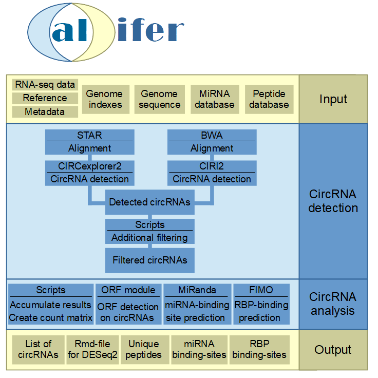

Calcifer: A workflow for circRNA detection and analysis
Calcifer: A workflow for circRNA detection and analysis
Author: Andre Brezski, Kathi Zarnack
1. Introduction
Calcifer is a workflow for highly automated detection and analysis of circRNAs in RNA-Seq datasets. It allows the evaluation of RNA-Seq read data up to a list of characterized circRNA isoforms, as well as the prediction of possible functions.
2. Overview

3. CircRNA detection
In a first step the RNA-seq data is aligned with STAR [1] and bwa [2] against the reference genome. The resulting bam-files are used as input for CIRCexplorer2 [3] and CIRI2 [4] respectively. These both tools yield an unfiltered list of putative circRNAs, which is further processed.
4. CircRNA filtering
The raw circRNA results from both tools are then further filtered for canonical splice sites, length of the circRNA, encompassing junctions and uniquely mapped back-splice junction reads. At the end only circRNAs which have at least 2 uniquely back-splice junction reads are considered for further analysis.
5. Downstream analysis
Based on the filtered circRNA list there is a broad downstream analysis. To shed light on putative biogenesis and function the downstream analysis consists out of detection of putative miRNA binding, RBP binding and open reading frames.
5.1. Linear and circular count data
In general a count matrix for linear and circular mapped reads is created. If needed these can be utilized by the user for differential expression analysis for multiple condition datasets. A rmd-file for a baseline DESeq2 analysis is included in the major workflow folder.
5.2. miRNA binding site detection
MiRNA binding sites are detected by miRanda [5] on the circular exonic sequence for each circRNA. To enable miRNA binding analysis over the back-splice junction sequence, the linear sequence is extended by 25 bp from the opposite end respectively.
5.3. RBP binding site detection
The RBP binding prediction is performed with FIMO [6] on the same sequence (back-splice junction extended linear exon sequence) and additional on the not included sequence around the back-splice junction. CircRNA biogenesis can be enabled by RBP binding close to the back-splice junction. Also a putative function of circRNAs is the direct binding of RBPs.
5.4. ORF prediction
The ORF prediction is performed on the linear- as well as the pseudo-circular and multi-cycle exonic circRNA sequence. These enables the prediction of longer ORFs, which span over the back-splice junction as well as multiple reading frames.
Literature
[1] Dobin, Alexander, et al. “STAR: ultrafast universal RNA-seq aligner.” Bioinformatics 29.1 (2013): 15-21.
[2] Li, H., & Durbin, R. (2009). Fast and accurate short read alignment with Burrows–Wheeler transform. Bioinformatics, 25(14), 1754–1760.
[3] Zhang, Xiao-Ou, et al. “Diverse alternative back-splicing and alternative splicing landscape of circular RNAs.” Genome research 26.9 (2016): 1277-1287.
[4] Gao, Yuan, Jinyang Zhang, and Fangqing Zhao. “Circular RNA identification based on multiple seed matching.” Briefings in bioinformatics 19.5 (2018): 803-810.
[5] John, Bino, et al. “Human microRNA targets.” PLoS biology 2.11 (2004): e363.
[6] Grant, Charles E., Timothy L. Bailey, and William Stafford Noble. “FIMO: scanning for occurrences of a given motif.” Bioinformatics 27.7 (2011): 1017-1018.